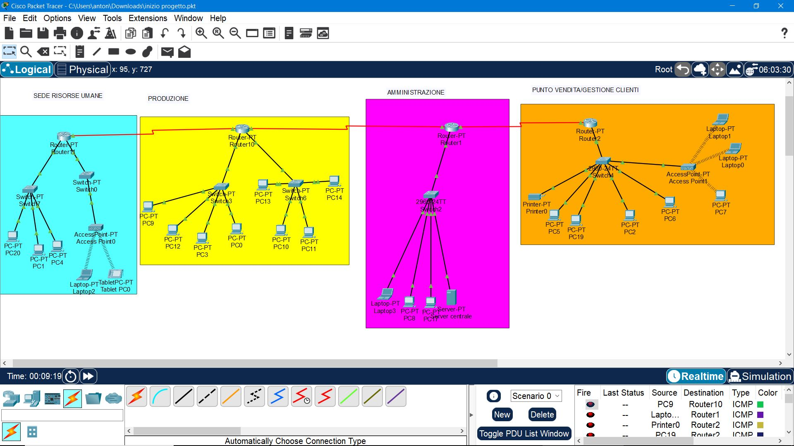

Questa rete aziendale è suddivisa in quattro blocchi principali per ottimizzare la gestione dei dati e migliorare la sicurezza:
Questa sede è composta da due VLAN: una per gli impiegati che gestiscono i contratti e una per la gestione dei lavoratori (colloqui e assunzioni).
Due VLAN suddividono il reparto di produzione in due sezioni distinte, ciascuna sotto il controllo di un capo reparto.
Il cuore amministrativo dell'azienda ospita un server centrale configurato con DHCP e un servizio DNS. Un firewall gestisce la sicurezza e ottimizza la banda di rete.
Qui vengono utilizzate VLAN per separare i commessi dai clienti. La clientela può connettersi alla rete tramite cavo o connessione wireless.
 Torna alla Presentazione